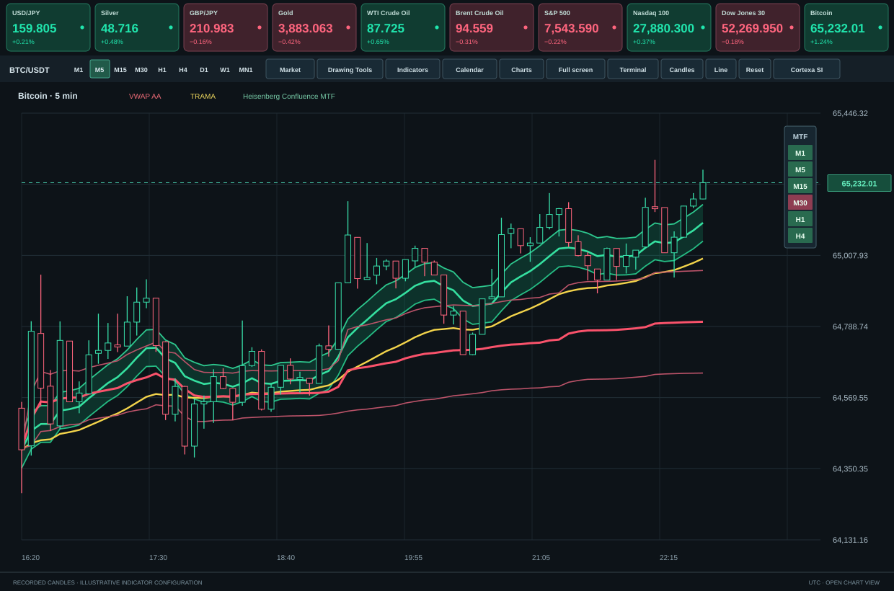
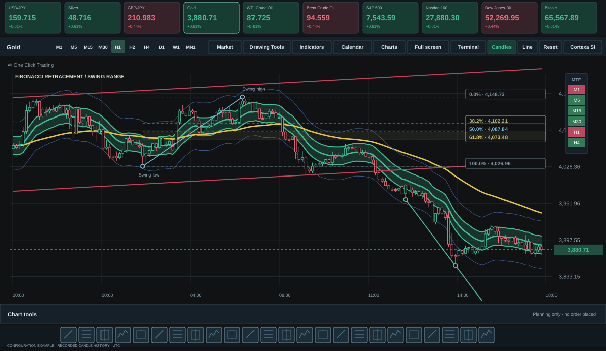
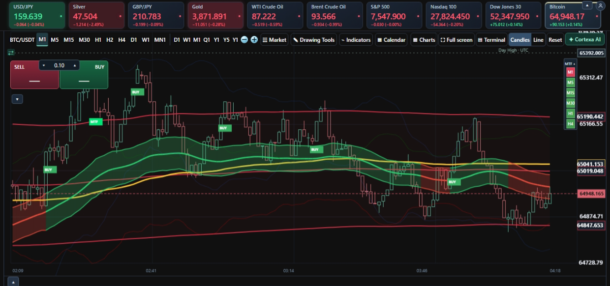
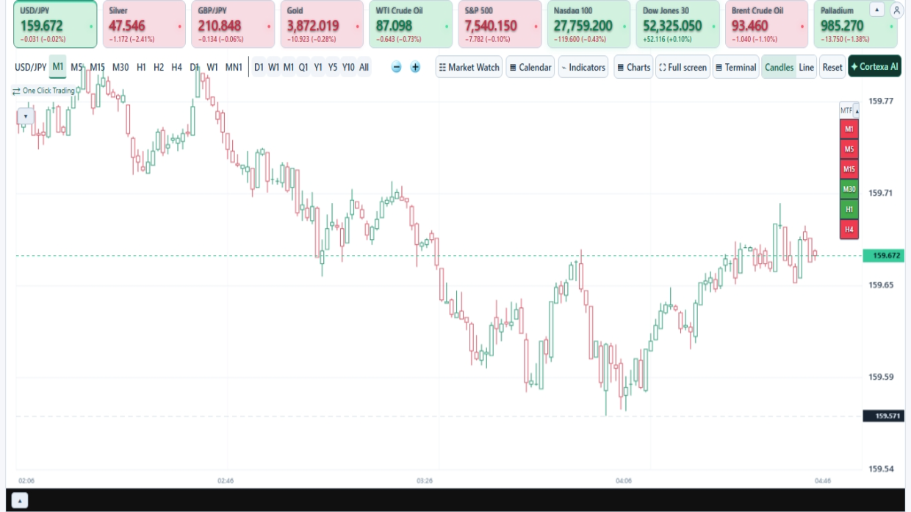
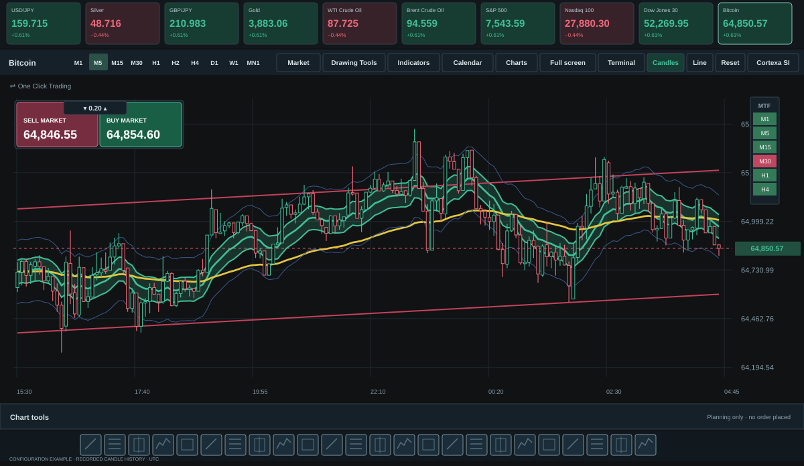

Room to see
what price is doing.
A generous chart with clear crosshairs, quick timeframe controls and collapsible panels. Keep the context. Lose the visual noise.
1m5m15m30m1h4h1D
A different perspective. One click away.
Meet Cortexa Super Intelligence, featuring our Heisenberg Confluence MTF engine. It brings multiple timeframes, sophisticated charts, built-in indicators, and trading signals together to help you identify potential opportunities and plan your next move.

Interface preview · sample dataFollow price. Check confluence. Draw your setup. Keep the market context close, without building your trading day around a dozen different windows.
A generous chart with clear crosshairs, quick timeframe controls and collapsible panels. Keep the context. Lose the visual noise.
Keep your chosen markets in view. Switch instruments from Market Watch and move straight into the chart you want to analyze.
VWAP AA, TRAMA, Bollinger Bands, RSI and more. Add the indicators you want, adjust inputs and styles, and keep only active tools on the toolbar.
Start with price alone. Add your drawings. Or bring confluence and indicators into the picture. See how the same workspace fits different ways of reading the market.
Choose a clean chart, connect separate swing points with trendlines and plan entry, stop-loss and take-profit levels.
Connect separate swing points with trendlines. Map a retracement with Fibonacci levels. Bring price structure and your indicators into the same view.

Draw straight lines between separate peaks or separate lows.
Place Fibonacci levels across a selected swing.
Keep indicator readings alongside the price action.
One chart can tell part of the story. Our Heisenberg Confluence MTF engine brings indicator readings across six timeframes into one clear panel, helping you see where conditions align before your next decision.
Spot bullish, bearish and mixed conditions. Combine that perspective with your own drawings, price levels and trading plan.
Explore the confluence setup ↗
● Green · Bullish confluence ● Red · Bearish confluence
Matching colors show agreement; mixed colors show conflicting conditions.
Historical illustration. Readings change; color alone is not a trading instruction.Connect a supported trading account to Cortexa. Bring Heisenberg Confluence MTF, charts, indicators and trading signals into the way you analyze, plan and manage trades.
Keep your account with your broker. Live execution requires a supported, authorized connection.
See the trading workflow →Broker integrations are in development. Account connections and live execution depend on provider support and authorization.
Live orders require an enabled, authorized broker connection.
CPI. Jobs. Interest-rate decisions. Keep upcoming releases, forecasts and published results at your fingertips—right alongside your charts.
Stay on your chart. Keep your positions in view. Stay aware of what’s next. Your charts, indicators, economic calendar and trading tools—all in one place.

Check a release without leaving your setup.
See events alongside the market you're watching.
Review actual, forecast and previous values.
Keep your chart layout and tools in place.
Cortexa Super Intelligence is designed to put your selected chart, indicator readings and market context into a focused explanation.
Recognize the selected symbol, timeframe and enabled indicators.
Explain alignment, conflicting readings and conditional market scenarios.
Highlight relevant upcoming releases and explain what to watch.
Connected AI and calendar-aware analysis require backend integration and verification before enabling.
USD/JPY · 15m · Illustrative setup
In this example, price holds above VWAP while shorter timeframes lean bullish. A bearish 30-minute reading suggests incomplete alignment.
A scheduled central-bank announcement could matter. Wait for the published release; the calendar alone does not predict direction.
Holding above the recent range supports continuation. Losing that range weakens the setup.
EXPLAIN THE EVIDENCE. DON'T INVENT CERTAINTY.Keep your market, confluence readings and order controls in one view. Use position-planning tools to map entry, stop loss and take profit.
Order controls shown as a design example. Live execution requires verified broker integration; this preview cannot place trades.

Choose your ticker. Compare timeframes. Keep markets within reach.
Read Heisenberg confluence, add indicators or work with a clean chart.
Mark entry, stop-loss and take-profit levels. Check the event calendar.
Market coverage depends on the connected feed and catalog. Use Market Watch to see what is available.
Yes. Supported indicators have input and style controls, with a limit of eight active indicators.
No. Provider delays, refresh intervals and revisions affect availability.
Connected AI requires verified server calculations, calendar evidence and backend testing before release.
Landing-page order examples are illustrations. Live trading requires supported broker/API integration, authorization and execution testing.
Sophisticated analysis. Intuitive design.
Trade with clarity.